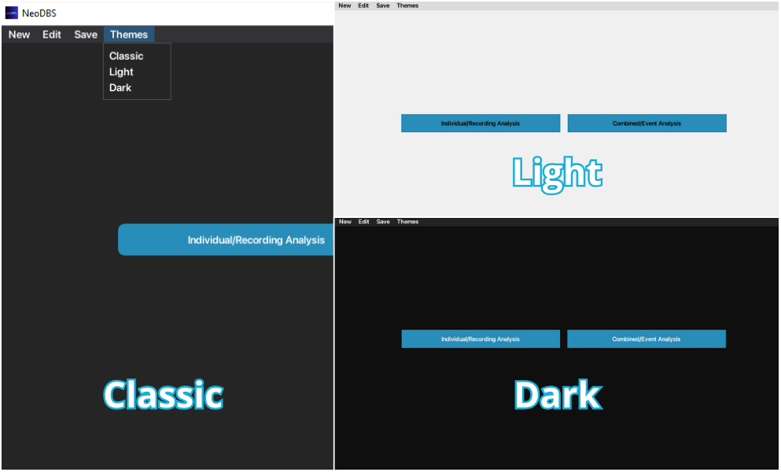
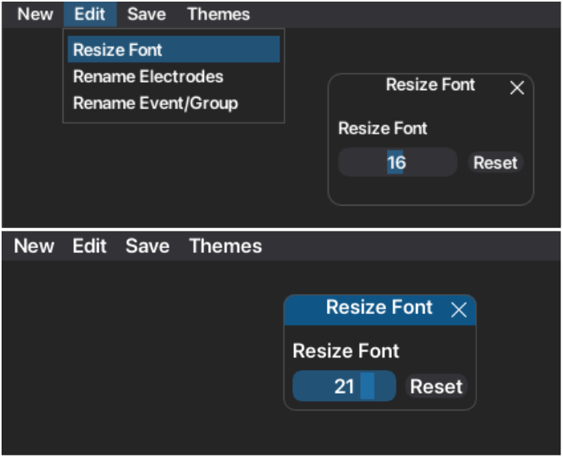
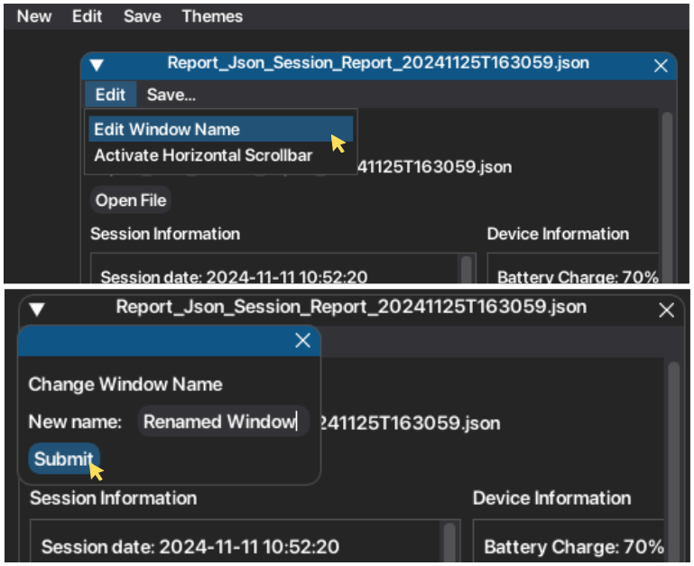
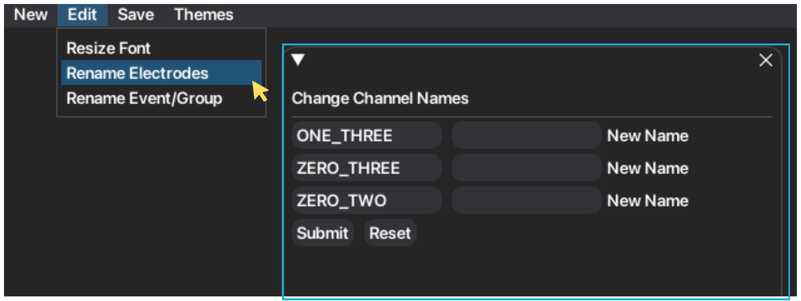
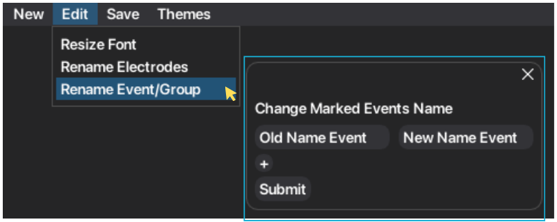
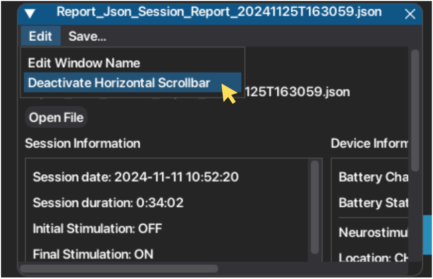
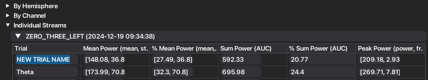
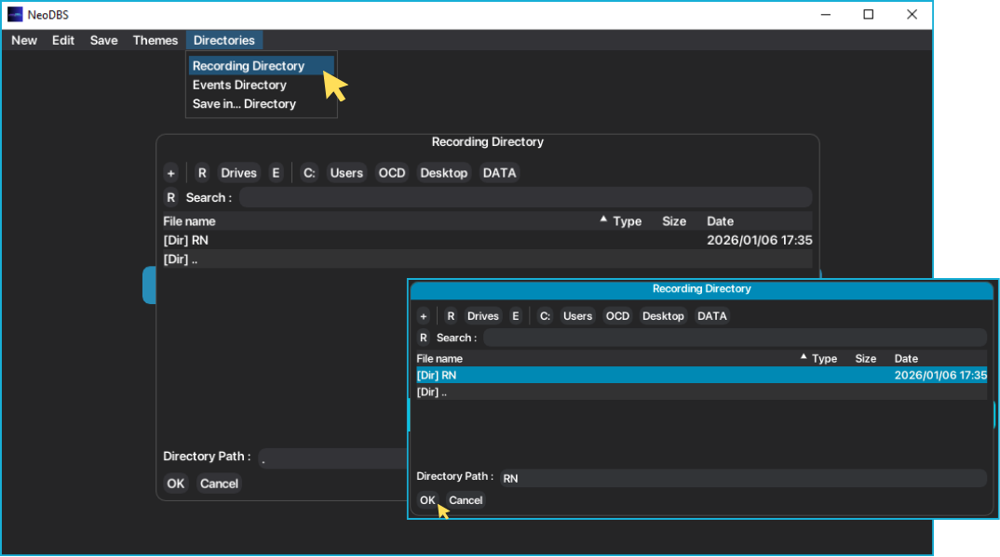

4. Extra Features¶
Beyond signal processing features, NeoDBS is a customizable platform at the user level. This includes customizing the graphical user interface (GUI), workspaces, nomenclature of recordings, and others. Since this platform is designed to foment research, NeoDBS development took in consideration researcher's and clinician's needs when performing signal and data analysis. Therefore, easy manipulation and exportation of data are strong features of this platform.
4.1. User Experience¶
User experience is one big focus of the platform, by creating an easier environment to perform difficult tasks such as signal processing.
4.1.1. Themes¶
The user has available three different themes. Classic, Light and Dark. Default theme is Classic.
On the main window menu, select "Themes".
Select the theme to be applied.

4.1.2. Font Size¶
Font can be easily resized for best readibility.
On the main window menu, select "Edit".
Press "Resize Font".
Select the font size, by sliding the button. Font will be instantly updated.
To go back to default font size (16), press "Reset".

4.1.3. Rename Window¶
To optimize workspace organization and accessibility, windows can be renamed. Individual window's name default to the selected JSON file name, while Combined window's name default to "Combined #", with # being the number of the window.
On the respective window menu, select "Edit".
Press "Edit Window Name".
Write the new name and press "Submit".

4.1.4. Rename Channels¶
Recording channels (ZERO_THREE, ONE_THREE, ZERO_TWO) can also be renamed, to facilitate interpretation of analysis. The updated names on new instances of the recording channels. If an item with mention of the recording channels is already created prior to the renaming, it will not be updated. Only future instances.
On the main window menu, select "Edit".
Press "Rename Electrodes".
Write the new name(s). Press "submit" to apply changes.
Future instances will appear with the updated names, on all workspaces.

4.1.5. Rename Events¶
At-home marked events are saved into the respective group event. These groups are defined by the clinician, when programming the DBS system for at-home chronic recordings. If an item with mention of the event/group name is already created prior to the renaming, it will not be updated. Only future instances.
On the main window menu, select "Edit".
Press "Rename Events/Groups".
Write the old event/group name and the new name.
To add more alterations, press "+".
5. Press "Submit" to apply changes. 4. Future instances will appear with the updated names, on all workspaces.

4.1.6. Horizontal Scrollbar¶
To allow windows to have customizable sizes, while accessing all information, horizontal scrollbar can be activated (or deactivated). By default, windows have the horizontal scrollbar deactivated.
On the respective window menu, select "Edit".
Press "Activate Horizontal Scrollbar".
To deactivate, press the same button.

Note
If the user has a mousepad, the horizontal scrollbar it is not required to navigate horizontally. Due to the GUI library configuration, it is not very recommended to activate the scrollbar, even though it has a very useful functionality.
4.1.7. Tables¶
In signal analysis, extracted features are organized into tables for easy visualization and exportation. Additionally, the name of all rows can be customized.

4.2. Export¶
As mentioned above, NeoDBS offers exportation functionalities for all created plots, tables and series. They can be individually exported, exported by window or export all created items in the platform.
To save individually the created item, press "Export Plot/Signals" or "Save Table", according to the item of interest.
To save all the chosen items per window, press "Save..." in the window menu bar. Items are saved into a folder with the window name.
To save all chosen items in the platform, press "Save" in the main window menu bar.
Select the type of exportation.
Note
Because the supporting GUI library (DearPyGui) has no functionality to export plots, these are properly converted into MatplotLib plots and saved into .png files. The conversion is made to replicate as close as possible the plot in NeoDBS, this includes zoom constraints and selected signals.
4.3. Directories¶
To optimize your work and organization, you can select the directories from which you want to upload or save data with NeoDBS. This will set the root directory in the platform, so it is easier and faster to access your recording sessions, input files and even where you want your exportations organized.

In the main window menu, click on "Directories".
To select the root directory of your recording session's files (JSON), press "Recording Directory".
In the file dialog, select the folder from which you access your data of interest. After you see the name of the folder in the Directory Path, press "OK".
You can do the same for other inputs (such as text files for events) in Events Directory or for your outputs saved from NeoDBS in "Save into... Directory".